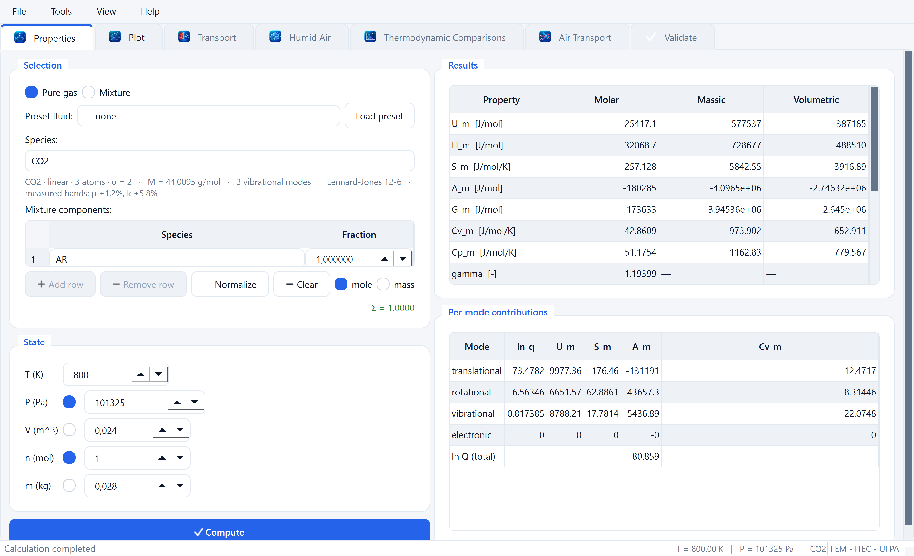
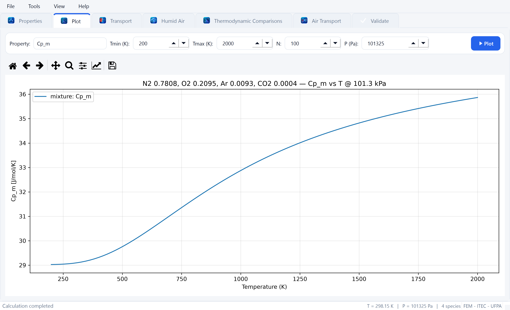
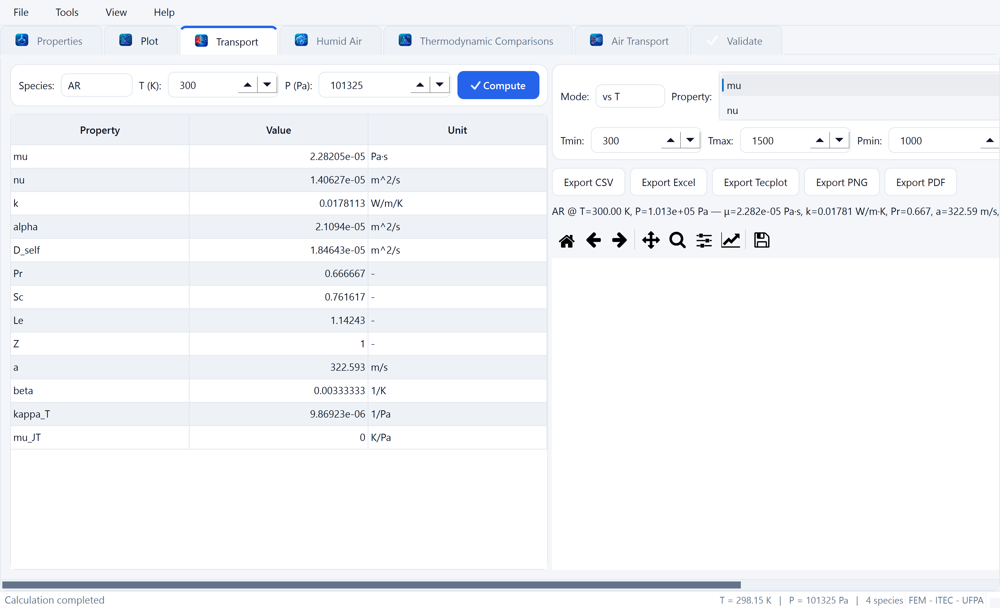
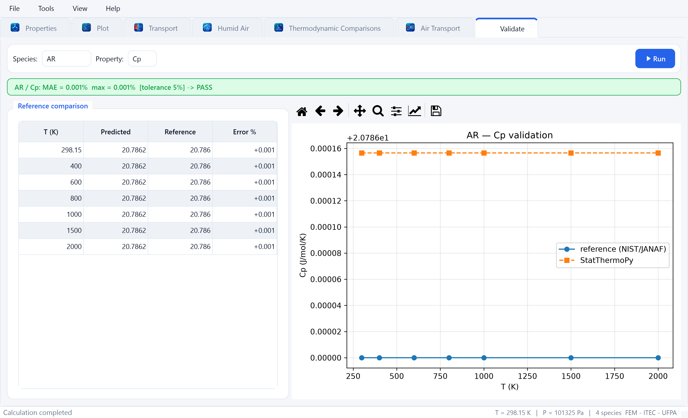
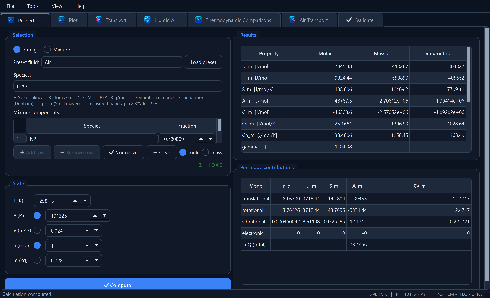

StatThermoPy
Termodinâmica estatística em Python — propriedades termodinâmicas calculadas exclusivamente a partir da função de partição molecular.
StatThermoPy é um pacote Python que calcula propriedades termodinâmicas de gases exclusivamente a partir da Mecânica Estatística, por meio da função de partição molecular — sem nenhuma correlação empírica de propriedades (polinômios NASA, JANAF, Shomate, CoolProp, REFPROP). Dados empíricos de referência são usados apenas para validação opcional, nunca para o cálculo em si.
- versão 0.1.0
- Python ≥ 3.11
- licença MIT
- 30 espécies
- CLI + GUI + API
Este documento é autônomo: funciona offline, sem dependências externas, e cobre desde a
instalação até a interpretação dos resultados. Todos os comandos aqui apresentados foram
conferidos contra a implementação atual da CLI
(src/statthermopy/cli/app.py).
2. Visão geral
O núcleo do StatThermoPy avalia a função de partição molecular Q de um gás ideal a partir de constantes espectroscópicas (massa molar, geometria, número de simetria, temperaturas rotacionais, números de onda vibracionais, níveis eletrônicos). Dessa função — e apenas dela — saem, por derivação analítica, todas as propriedades termodinâmicas: U, H, S, A, G, Cv, Cp, γ e μ, nas bases molar e mássica.
Sobre esse núcleo há três camadas construídas com a mesma disciplina de primeiros princípios:
- Misturas de gases ideais — frações molares ou mássicas, com desagregação por componente e entropia de mistura, além de um registro de fluidos predefinidos.
- Propriedades de transporte — solução de Chapman–Enskog de primeira ordem da equação de Boltzmann com potencial de par Lennard-Jones 12-6.
- Ar úmido estatístico — solubilidade máxima de vapor d'água a partir do equilíbrio líquido–vapor μv = μl, sem correlação de Antoine/Magnus/Tetens.
O pacote é acessível por três vias equivalentes, todas apoiadas na mesma API pública: um terminal científico interativo (REPL), um modo de execução direta para scripts, e uma interface gráfica Qt opcional. Nenhuma delas acrescenta física: são camadas de apresentação.
3. Principais recursos
3.1 Motor termodinâmico
- Gases ideais monoatômicos, diatômicos, poliatômicos lineares e não lineares.
- Contribuições translacional, rotacional, vibracional (oscilador harmônico quântico) e eletrônica, além de rotação interna impedida (rotor 1-D por autovalores de Mathieu) para torções de ligação simples, como os topos metila do etano e do propano.
- Bases molar e mássica para U, H, S, A, G, Cv, Cp, γ, μ, mais a função de partição total.
- Misturas de gases ideais (frações molares ou mássicas) com desagregação da contribuição por componente e entropia de mistura, mais um registro de fluidos predefinidos — selecione Air (ar seco padrão N₂/O₂/Ar/CO₂, com vapor d'água opcional) ou monte qualquer composição personalizada.
- Banco de dados molecular com 30 espécies, facilmente extensível via YAML.
3.2 Transporte estatístico
- Coeficientes de transporte e termofísicos de um gás puro pela solução de Chapman–Enskog de primeira ordem da equação de Boltzmann com potencial Lennard-Jones: viscosidade dinâmica e cinemática, condutividade térmica, difusividade térmica, difusão binária e autodifusão, números de Prandtl/Schmidt/Lewis, fator de compressibilidade, velocidade do som, coeficiente de expansão, compressibilidade isotérmica e coeficiente de Joule–Thomson.
- As capacidades caloríficas e γ vêm do motor de função de partição; os únicos insumos moleculares são σ e ε de Lennard-Jones (sem REFPROP/CoolProp).
- Curvas vs T / vs P, mapas 2-D T×P, exportação CSV/Excel/Tecplot/PNG/PDF.
3.3 Ar úmido estatístico
- Solubilidade máxima de vapor d'água no ar em função de temperatura e pressão a partir do equilíbrio líquido–vapor μv = μl: a energia de Gibbs do vapor vem puramente da função de partição da água (sua entropia absoluta reproduz S° do vapor com desvio < 0,1 %) e a do líquido de uma referência plugável (IAPWS-95 ou um modelo transparente de cp constante), unidas por uma âncora no ponto triplo — sem correlação de Antoine/Magnus/Tetens.
- Prevê Psat com ≈ 0,1 % perto de condições ambientes (≈ 1,5 % a 100 °C) e o conjunto psicrométrico completo: razão de umidade, umidade absoluta e relativa, ponto de orvalho, bulbo úmido, grau de saturação, densidade do ar úmido, M̄, R, além de h/u/s/g/a/Cp/Cv/γ.
- Análise gráfica comparativa: conteúdo de vapor d'água (real vs saturação, com início de condensação) e comparação ar seco vs ar úmido de qualquer propriedade (H, U, S, G, A, Cp, Cv, Tv, Tp) sob restrições isobárica e isocórica, com legenda interativa, tooltips, zoom/pan e exportação PNG/SVG/PDF + CSV/Excel.
3.4 Interfaces, validação e desempenho
- GUI Qt (opcional, PySide6) com abas Properties / Plot / Transport / Humid Air / Thermodynamic Comparisons / Validate e temas claro/escuro.
- Terminal científico CLI, gráficos de propriedade vs T e exportação para CSV/JSON/YAML/Excel/LaTeX.
- Validação automática contra dados de referência NIST/JANAF embarcados (Cp° e S° para as 30 espécies do banco; 25 pela equação de Shomate do NIST WebBook, C2H6/C3H8/C6H6 por polinômios NASA Glenn, I2 pelo ajuste Shomate em fase gasosa acima do ponto de sublimação, CH3CCl3 por polinômios NASA-7 de Burcat/Ruscic).
- Backends de desempenho — execução plugável NumPy / Numba / OpenMP / CUDA
com a mesma física e API; kernels
@njitaceleram a soma quântica em J e a grade de propriedades em lote de temperatura (CUDA cai automaticamente para CPU sem GPU NVIDIA). - Suíte de testes unitários visando cobertura ≥ 95 %.
4. Instalação e dependências
StatThermoPy requer Python 3.11 ou superior. A instalação em modo desenvolvimento (editável) é a recomendada enquanto o pacote está em fase alfa:
python -m pip install -e ".[dev]" # núcleo + CLI
python -m pip install -e ".[dev,gui]" # ... mais a GUI Qt (PySide6)
python -m pip install -e ".[dev,accel]" # ... mais aceleração CPU Numba/OpenMP4.1 Dependências
| Grupo | Pacotes | Para quê |
|---|---|---|
| obrigatório | numpy>=1.26, pyyaml>=6.0, pandas>=2.0, matplotlib>=3.7 | Motor de cálculo, banco YAML, tabelas e gráficos. |
excel | openpyxl>=3.1 | Exportação para planilhas .xlsx. |
gui | PySide6>=6.6 | Interface gráfica Qt. |
accel | numba>=0.60 | Backends Numba e OpenMP (CPU). |
cuda | numba>=0.60 | Backend CUDA (requer GPU NVIDIA; sem ela, cai para CPU). |
humidair | iapws>=1.5 | Referência IAPWS-95 de alta acurácia para a água líquida no módulo de ar úmido. Sem ela, o módulo usa um líquido transparente de cp constante. |
dev | pytest, pytest-cov, ruff, black, sphinx, openpyxl, PySide6, numba, iapws | Conjunto completo de desenvolvimento: testes, lint, formatação e documentação. |
4.2 Comandos instalados
A instalação registra dois executáveis de console:
| Comando | Descrição |
|---|---|
statthermopy | CLI: terminal interativo (sem argumentos) ou execução direta por subcomandos. |
statthermopy-gui | Interface gráfica Qt (equivale a python -m statthermopy.gui.app). |
statthermopy run --gas N2 --T 298.15 --P 101325. Se o relatório de
propriedades do N₂ for impresso, o núcleo e a CLI estão operacionais.
5. Início rápido
5.1 Pela API Python
from statthermopy import Thermodynamics, State
from statthermopy.database import get
n2 = get("N2")
st = State(T=298.15, P=101325.0)
th = Thermodynamics(n2, st)
print(th.properties()) # relatório molar e mássico5.2 Pelo terminal interativo
statthermopy
> gas N2
> T = 298.15
> P = 101325
> properties5.3 Por execução direta
statthermopy run --gas N2 --T 298.15 --P 101325As três formas produzem o mesmo resultado numérico — mudam apenas a apresentação e a ergonomia. A escolha depende do uso: a API para integração em scripts, o terminal interativo para exploração, e a execução direta para automação e pipelines.
6. Espécies e fluidos disponíveis
O banco molecular reúne 30 espécies. Cada uma é um arquivo YAML em
src/statthermopy/database/data/, contendo massa molar, geometria, número de simetria,
temperaturas rotacionais, modos vibracionais, níveis eletrônicos, parâmetros de Lennard-Jones e
as referências espectroscópicas. Para listar as espécies em tempo de execução:
statthermopy
> list30 gases: AR, C2H2, C2H4, C2H6, C3H8, C6H6, CCL4, CFCL3, CH3CCL3, CH4, CL2, CO, CO2, H2, H2O, H2S, HBR, HCL, HE, HI, I2, KR, N2, N2O, NE, NH3, NO, O2, SO2, XE
| Classe | Espécies | N.º |
|---|---|---|
| Monoatômicas | He, Ne, Ar, Kr, Xe | 5 |
| Diatômicas homonucleares | H2, N2, O2, Cl2, I2 | 5 |
| Diatômicas heteronucleares | CO, NO, HCl, HBr, HI | 5 |
| Triatômicas | H2O, CO2, N2O, SO2, H2S | 5 |
| Poliatômicas (hidrocarbonetos) | CH4, C2H2, C2H4, C2H6, C3H8, C6H6 | 6 |
| Poliatômicas (halogenadas) | CCl4, CFCl3, CH3CCl3 | 3 |
| Outras poliatômicas | NH3 | 1 |
gas N2, gas n2 e
--gas N2 selecionam a mesma espécie. A listagem exibe as chaves em caixa alta
(HCL), mas --gas HCl funciona igualmente.
6.1 Fluidos predefinidos
Além das espécies puras, há um registro de fluidos — composições prontas de mistura. Para listar:
statthermopy
> fluidspredefined fluids: Air
O fluido Air corresponde ao ar seco padrão, com frações molares
N₂ = 0,7808, O₂ = 0,2095, Ar = 0,0093 e CO₂ = 0,0004. Vapor d'água pode ser acrescentado com
h2o=<fração molar> no terminal, ou --humidity <fração molar>
na execução direta; os constituintes secos são reescalados para completar o restante.
6.2 Estendendo o banco
Acrescentar uma espécie não requer alterar código: basta depositar um novo arquivo YAML em
src/statthermopy/database/data/ seguindo o mesmo esquema. Os campos essenciais são
name, formula, molar_mass_gmol, geometry,
n_atoms, symmetry_number, rotational_temperatures,
vibrational_modes, electronic_levels, references e o bloco
opcional lennard_jones (necessário para as propriedades de transporte).
7. Propriedades termodinâmicas
Todas as propriedades são obtidas por derivação da função de partição. O relatório do comando
properties traz três blocos: grandezas molares, grandezas mássicas e os fatores da
função de partição.
| Símbolo | Grandeza | Unidade |
|---|---|---|
U_m / U_s | Energia interna | J/mol · J/kg |
H_m / H_s | Entalpia | J/mol · J/kg |
S_m / S_s | Entropia absoluta | J/mol/K · J/kg/K |
A_m / A_s | Energia livre de Helmholtz | J/mol · J/kg |
G_m / G_s | Energia livre de Gibbs | J/mol · J/kg |
Cv_m / Cv_s | Capacidade calorífica a volume constante | J/mol/K · J/kg/K |
Cp_m / Cp_s | Capacidade calorífica a pressão constante | J/mol/K · J/kg/K |
gamma | Razão de capacidades caloríficas Cp/Cv | — |
mu_m | Potencial químico | J/mol |
R_specific | Constante específica do gás | J/kg/K |
Qt, Qr, Qv, Qe, Qtotal | Fatores da função de partição | — |
S_mixing | Entropia de mistura (somente misturas) | J/mol/K |
7.1 Exemplo — nitrogênio em condições ambientes
Objetivo. Obter o conjunto completo de propriedades do N₂ nas condições de referência (25 °C, 1 atm), incluindo os fatores da função de partição.
statthermopy run --gas N2 --T 298.15 --P 101325Unidades de entrada. --T em kelvin (K), --P em
pascal (Pa). O padrão opcional --n é a quantidade de matéria em mol (1 mol se
omitido).
State: T=298.1500 K P=101325 Pa V=2.446540e-02 m^3 n=1 mol m=0.0280134 kg
Molar mass: 28.0134 g/mol
--- Molar (per mol) ---
U_m = 6197.714287 J/mol
H_m = 8676.671317 J/mol
S_m = 191.445830 J/mol/K
A_m = -50881.859892 J/mol
G_m = -48402.902862 J/mol
Cv_m = 20.798438 J/mol/K
Cp_m = 29.112901 J/mol/K
gamma = 1.399764 -
mu_m = -48402.902862 J/mol
--- Massic (per kg) ---
U_s = 221241.059176 J/kg
H_s = 309732.889143 J/kg
S_s = 6834.080472 J/kg/K
A_s = -1816340.033412 J/kg
G_s = -1727848.203445 J/kg
Cv_s = 742.446040 J/kg/K
Cp_s = 1039.249092 J/kg/K
R_specific = 296.803052 J/kg/K
--- Partition function ---
Qt = 3.509568e+30
Qr = 5.179812e+01
Qv = 1.000011e+00
Qe = 1.000000e+00
Qtotal = 1.817911e+32
ln Q = 74.280411
Como interpretar. Cp_m ≈ 29,11 J/mol/K é o valor clássico de uma
diatômica rígida (7R/2 ≈ 29,10) — o modo vibracional está praticamente congelado a
298 K, o que se confirma em Qv ≈ 1,000011. A entropia absoluta
S_m ≈ 191,45 J/mol/K reproduz o valor tabelado de terceira lei do N₂. O expoente
enorme de Qt (10³⁰) reflete a densidade de estados translacionais; o
ln Q é reportado porque é a grandeza numericamente estável.
7.2 Exemplo — dióxido de carbono aquecido e comprimido
Objetivo. Avaliar quanto os modos vibracionais do CO₂ se ativam a 800 K e 5 bar.
statthermopy run --gas CO2 --T 800 --P 500000Unidades de entrada. T = 800 K; P = 500 000 Pa = 5 bar.
State: T=800.0000 K P=500000 Pa V=1.330314e-02 m^3 n=1 mol m=0.0440095 kg
Molar mass: 44.0095 g/mol
--- Molar (per mol) ---
U_m = 25417.132120 J/mol
H_m = 32068.702214 J/mol
S_m = 243.855343 J/mol/K
Cv_m = 42.860927 J/mol/K
Cp_m = 51.175389 J/mol/K
gamma = 1.193987 -
--- Partition function ---
Qt = 1.651616e+31
Qr = 7.087172e+02
Qv = 2.264570e+00
Qe = 1.000000e+00
Qtotal = 2.650744e+34
Como interpretar. Qv = 2,26 (contra ≈ 1 para o N₂ ambiente)
mostra os modos de flexão do CO₂ populados. Isso eleva Cp_m a 51,18 J/mol/K, muito
acima do valor de rotor rígido de uma molécula linear (7R/2 ≈ 29,1), e derruba γ para
1,194 — os quatro modos vibracionais do CO₂ podem acrescentar até 4R ≈ 33,3 J/mol/K
quando plenamente excitados. Note que a pressão
não afeta Cp nem Cv num gás ideal — ela entra apenas em
S, G, A, μ e no volume.
7.3 Exemplo — fluido predefinido Air
Objetivo. Obter as propriedades do ar seco padrão, com a contribuição de cada constituinte e a entropia de mistura.
statthermopy run --fluid Air --T 300 --P 101325 Mixture (mole): N2=0.7808, O2=0.2095, Ar=0.0093, CO2=0.0004
T=300.0000 K P=101325 Pa M_avg=28.9660 g/mol R_specific=287.0420 J/kg/K
--- Molar (per mol) ---
U_m = 6215.125805 J/mol
H_m = 8709.464591 J/mol
S_m = 198.843472 J/mol/K
A_m = -53437.915687 J/mol
G_m = -50943.576902 J/mol
Cv_m = 20.773071 J/mol/K
Cp_m = 29.087534 J/mol/K
gamma = 1.400252 -
mu_m = -50943.576902 J/mol
S_mixing = 4.717606 J/mol/K
--- Massic (per kg) ---
Cp_s = 1004.195341 J/kg/K
R_specific = 287.042027 J/kg/K
--- Per-component contribution to molar totals ---
species x_i U S G Cp
N2 0.7808 4869.27 151.229 -38551.97 22.732
O2 0.2095 1308.13 45.693 -11877.37 6.146
Ar 0.0093 34.94 1.809 -484.55 0.194
CO2 0.0004 2.77 0.112 -29.69 0.015
Como interpretar. M_avg = 28,966 g/mol e
R_specific = 287,04 J/kg/K reproduzem exatamente os valores clássicos do ar seco —
uma verificação forte, porque aqui saíram da composição e das massas molares, não de uma tabela.
Cp_s ≈ 1004 J/kg/K é o valor de manual. A entropia de mistura de 4,72 J/mol/K é a
penalidade de mistura ideal; ela está incluída em S_m. A tabela por componente
mostra as parcelas xi-ponderadas que somam cada total molar.
Para acrescentar vapor d'água à composição, use --humidity com a fração molar
desejada:
statthermopy run --fluid Air --humidity 0.01 --T 300 --P 1013257.4 Exemplo — mistura gasosa personalizada
Objetivo. Avaliar uma mistura de 70 % argônio e 30 % nitrogênio (base molar) a 400 K e 2 bar.
statthermopy run --mixture Ar:0.7 N2:0.3 --T 400 --P 200000Unidades de entrada. As frações são adimensionais e devem somar 1; a base é
molar por padrão e pode ser trocada com --basis mass.
Mixture (mole): Ar=0.7000, N2=0.3000
T=400.0000 K P=200000 Pa M_avg=36.3676 g/mol R_specific=228.6227 J/kg/K
--- Molar (per mol) ---
U_m = 5988.164098 J/mol
H_m = 9313.949146 J/mol
S_m = 172.020336 J/mol/K
Cv_m = 15.003178 J/mol/K
Cp_m = 23.317640 J/mol/K
gamma = 1.554180 -
S_mixing = 5.079008 J/mol/K
--- Per-component contribution to molar totals ---
species x_i U S G Cp
Ar 0.7000 3492.07 110.710 -38463.68 14.550
N2 0.3000 2496.09 61.311 -21030.50 8.767
Como interpretar. γ = 1,554 fica entre o valor monoatômico (1,667, do Ar) e o
diatômico (1,400, do N₂), ponderado pela composição — como esperado. Cv_m = 15,003
J/mol/K é exatamente a média ponderada molar 0,7 × 12,472 + 0,3 × 20,910 = 15,003
(valores de Cv do Ar e do N₂ a 400 K) — como deve ser numa mistura ideal, em
que as capacidades caloríficas são aditivas. Já a entropia de mistura (5,08 J/mol/K) é o único
termo não aditivo: é máxima perto de composições equimolares e cai a zero para um
componente puro.
No terminal interativo, a mesma mistura é definida com:
statthermopy
> mixture Ar:0.7 N2:0.3
> T = 400
> P = 200000
> properties7.5 Desagregação por modo
Objetivo. Ver quanto cada grau de liberdade contribui para U,
S, A e Cv. Disponível no terminal interativo pelo comando
modes.
statthermopy
> gas N2
> T = 300
> P = 101325
> modes Partition function factors (T=300.0 K):
ln Qt = 70.348510 Qt = 3.564263e+30
ln Qr = 3.953540 Qr = 5.211953e+01
ln Qv = 0.000012 Qv = 1.000012e+00
ln Qe = 0.000000 Qe = 1.000000e+00
ln Q = 74.302062 Q = 1.857700e+32
Per-mode contributions (molar):
translational U= 3741.5082 S= 150.4386 A= -41390.0853 Cv= 12.4717
rotational U= 2494.3388 S= 41.1860 A= -9861.4674 Cv= 8.3145
vibrational U= 0.3451 S= 0.0013 A= -0.0305 Cv= 0.0130
electronic U= 0.0000 S= 0.0000 A= -0.0000 Cv= 0.0000
Como interpretar. A leitura é diretamente a equipartição: Cv translacional = 3R/2 = 12,47 J/mol/K e rotacional (linear) = R = 8,31 J/mol/K, somando 20,79. A contribuição vibracional (0,013) é desprezível a 300 K — a temperatura vibracional do N₂ é ≈ 3374 K. A contribuição eletrônica é nula porque o estado fundamental do N₂ é um singleto sem níveis baixos acessíveis.
7.6 Gráficos de propriedade vs temperatura
Objetivo. Traçar a variação de uma propriedade ao longo de uma faixa de
temperatura, salvando um PNG. A sintaxe é
plot <prop> [Tmin] [Tmax] [npontos] [saida.png].
statthermopy
> gas N2
> P = 101325
> plot Cp_m 200 2000 100 n2_cp.png
> plot H_m 200 2000 100 n2_enthalpy.png
> plot S_m 200 2000 100 n2_entropy.png
> transport mu 300 1500 100 n2_viscosity.pngselected: Molecule(name='N2', formula='N2', M=28.0134 g/mol, geometry=linear) saved plot -> n2_cp.png saved plot -> n2_enthalpy.png saved plot -> n2_entropy.png saved plot -> n2_viscosity.png
Unidades de entrada. Tmin e Tmax em
kelvin; o número de pontos é inteiro. A pressão usada é a definida por P; se
nenhuma for definida, adota-se 101325 Pa.
Arquivos gerados. Quatro PNGs a 120 dpi no diretório de trabalho:
n2_cp.png, n2_enthalpy.png, n2_entropy.png e
n2_viscosity.png. Se o nome do arquivo for omitido, o padrão é
<GAS>_<prop>.png.
Como interpretar. A curva de Cp do N₂ sobe de ≈ 29,1 J/mol/K
a 200 K para ≈ 35,7 J/mol/K a 2000 K, à medida que o modo vibracional se ativa; a entalpia é
monotonicamente crescente e a entropia cresce logaritmicamente. A quarta linha usa o comando
transport, e não plot, porque a viscosidade pertence ao módulo de
transporte — a sintaxe, porém, é idêntica.
plot
U_m, H_m, S_m, A_m, G_m,
Cv_m, Cp_m, gamma, T_v, T_p,
e ainda os fatores da função de partição Qt, Qr, Qv,
Qe, Qtotal (estes últimos traçados em escala logarítmica).
8. Propriedades de transporte
Os coeficientes de transporte e termofísicos de um gás puro derivam da solução de
Chapman–Enskog de primeira ordem da equação de Boltzmann com o potencial de par
Lennard-Jones 12-6. O motor permanece de primeiros princípios: as capacidades
caloríficas e γ vêm da função de partição, e os únicos insumos moleculares são σ (diâmetro de
colisão) e ε (profundidade do poço), armazenados por espécie como LennardJones.
Nenhuma base externa de propriedades (REFPROP/CoolProp) é usada.
| Símbolo | Grandeza | Unidade |
|---|---|---|
mu | Viscosidade dinâmica | Pa·s |
nu | Viscosidade cinemática | m²/s |
k | Condutividade térmica (Eucken) | W/m/K |
alpha | Difusividade térmica | m²/s |
D_self | Coeficiente de autodifusão | m²/s |
Pr | Número de Prandtl | — |
Sc | Número de Schmidt | — |
Le | Número de Lewis | — |
Z | Fator de compressibilidade | — |
a | Velocidade do som | m/s |
beta | Coeficiente de expansão térmica | 1/K |
kappa_T | Compressibilidade isotérmica | 1/Pa |
mu_JT | Coeficiente de Joule–Thomson | K/Pa |
8.1 Exemplo — todas as propriedades de transporte do N₂
Objetivo. Obter o quadro completo de transporte do nitrogênio a 300 K e 1 atm.
statthermopy transport --gas N2 --T 300 --P 101325Unidades de entrada. --T em K, --P em Pa. O
argumento --gas é obrigatório neste subcomando.
Transport properties — N2 @ T=300.0000 K, P=101325 Pa
mu = 1.76985e-05 Pa·s
nu = 1.55528e-05 m^2/s
k = 0.0249598 W/m/K
alpha = 2.11049e-05 m^2/s
D_self = 2.04408e-05 m^2/s
Pr = 0.736929 -
Sc = 0.760871 -
Le = 1.03249 -
Z = 1 -
a = 353.037 m/s
beta = 0.00333333 1/K
kappa_T = 9.86923e-06 1/Pa
mu_JT = 0 K/Pa
Como interpretar. μ = 1,770 × 10⁻⁵ Pa·s e k = 0,0250 W/m/K estão dentro de poucos por cento dos valores experimentais do N₂ — notável para um cálculo cujos únicos insumos moleculares são σ e ε. Pr = 0,737 é o resultado da forma fechada de Eucken para uma diatômica. Z = 1, β = 1/T = 0,00333 1/K, κT = 1/P e μJT = 0 são as assinaturas exatas do gás ideal: não são aproximações, mas consequências da equação de estado adotada.
8.2 Exemplo — uma única propriedade com gráfico
Objetivo. Reportar apenas a viscosidade em um ponto e, na mesma execução, gerar a curva μ(T) de 300 K a 1500 K com 100 pontos.
statthermopy transport --gas N2 --prop mu --Tmin 300 --Tmax 1500 --N 100 --png n2_viscosity.pngmu(N2) @ T=300.00 K, P=1.013e+05 Pa = 1.76985e-05 Pa·s saved plot -> n2_viscosity.png
Arquivo gerado. n2_viscosity.png (120 dpi). Se --prop
for omitido junto com --png, a propriedade traçada por padrão é mu.
Como interpretar. O valor no ponto usa --T (padrão 300 K),
enquanto a curva usa a faixa --Tmin/--Tmax — são controles independentes.
Entre 300 K e 1500 K a curva cresce como ≈ T0,66 — mais íngreme que a
previsão T1/2 da teoria cinética elementar, porque a integral de colisão
Ω(2,2)* decresce com a temperatura reduzida.
8.3 Exemplo — difusão binária
Objetivo. Calcular o coeficiente de difusão binária Dij entre duas espécies, usando as regras de combinação de Lennard-Jones.
statthermopy transport --gas N2 --binary N2 O2 --T 300 --P 101325D(N2,O2) @ T=300.00 K, P=1.013e+05 Pa = 2.064420e-05 m^2/s
Como interpretar. D(N₂,O₂) = 2,06 × 10⁻⁵ m²/s a 1 atm, valor
consistente com a medida experimental. O coeficiente é simétrico —
D(N₂,O₂) = D(O₂,N₂) — e escala com 1/P. O argumento
--gas continua obrigatório pela estrutura do subcomando, mas --binary
tem precedência sobre --prop.
No terminal interativo, o mesmo cálculo é:
statthermopy
> gas N2
> T = 300
> P = 101325
> transport
> transport binary N2 O2
> transport mu 300 1500 100 n2_mu.png8.4 Transporte do ar seco e do ar úmido
O subcomando airtransport aplica regras de mistura — Wilke para μ, Mason–Saxena
para k e Blanc para a difusividade efetiva — à composição do ar, seco ou úmido.
Ar seco
Objetivo. Quadro completo de transporte do ar seco a 300 K e 1 atm, com a contribuição de cada espécie.
statthermopy airtransport --T 300 --P 101325 Air transport — Dry air @ T=300.0000 K, P=101325 Pa
mixing rules: mu=Wilke, k=Mason-Saxena, D_eff=Blanc
Dynamic viscosity = 1.83511e-05 Pa·s
Kinematic viscosity = 1.55959e-05 m^2/s
Thermal conductivity = 0.0249919 W/m/K
Thermal diffusivity = 2.1151e-05 m^2/s
Water-vapour diffusivity in air = 2.18993e-05 m^2/s
Prandtl number = 0.73736 -
Schmidt number = 0.712165 -
Lewis number = 0.965831 -
Density = 1.17666 kg/m^3
Specific gas constant = 287.042 J/kg/K
Speed of sound = 347.245 m/s
Thermal expansion coefficient = 0.00333333 1/K
Isothermal compressibility = 9.86923e-06 1/Pa
Heat-capacity ratio = 1.40025 -
--- Per-species contributions ---
Species x mu_i k_i D_im mu_contrib k_contrib
N2 0.7808 1.7698e-05 2.4960e-02 2.0584e-05 1.3838e-05 1.9185e-02
O2 0.2095 2.0569e-05 2.5544e-02 2.0628e-05 4.2786e-06 5.5673e-03
Ar 0.0093 2.2820e-05 1.7811e-02 1.9591e-05 2.2586e-07 2.2940e-04
CO2 0.0004 1.5186e-05 1.6399e-02 1.5600e-05 8.2395e-09 9.8475e-06
Como interpretar. μ = 1,835 × 10⁻⁵ Pa·s e ρ = 1,177 kg/m³ concordam com os valores tabelados do ar a 300 K. Note que a viscosidade da mistura (1,835 × 10⁻⁵) excede a do N₂ puro (1,770 × 10⁻⁵) porque o O₂ e o Ar são mais viscosos — a regra de Wilke não é uma média molar simples. Pr = 0,737 é o resultado da forma fechada de Eucken; o valor experimental do ar gira em torno de 0,71, de modo que o desvio é de poucos por cento.
Ar úmido
Objetivo. Repetir a avaliação com 50 % de umidade relativa, para quantificar o efeito do vapor d'água.
statthermopy airtransport --T 300 --P 101325 --rh 0.50Unidades de entrada. --rh é a umidade relativa adimensional no
intervalo 0–1 (0,50 = 50 %). Alternativamente: --w para a razão de umidade em
kg/kg de ar seco, --x para a fração molar de água, ou --sat para ar
saturado.
Air transport — Humid air @ T=300.0000 K, P=101325 Pa, humidity ratio w=1.1029e-02 kg/kg
mixing rules: mu=Wilke, k=Mason-Saxena, D_eff=Blanc
Dynamic viscosity = 1.82192e-05 Pa·s
Thermal conductivity = 0.0250143 W/m/K
Prandtl number = 0.738198 -
Density = 1.16891 kg/m^3
Specific gas constant = 288.945 J/kg/K
Speed of sound = 348.212 m/s
Heat-capacity ratio = 1.39878 -
--- Per-species contributions ---
Species x mu_i k_i D_im mu_contrib k_contrib
N2 0.7672 1.7698e-05 2.4960e-02 2.0678e-05 1.3592e-05 1.8929e-02
O2 0.2058 2.0569e-05 2.5544e-02 2.0655e-05 4.2027e-06 5.4933e-03
Ar 0.0092 2.2820e-05 1.7811e-02 1.9616e-05 2.2191e-07 2.2633e-04
CO2 0.0004 1.5186e-05 1.6399e-02 1.5605e-05 8.0983e-09 9.7161e-06
H2O 0.0174 1.0757e-05 2.6204e-02 2.1899e-05 1.9456e-07 3.5628e-04
Como interpretar. A razão de umidade é w = 1,1029 × 10⁻² kg/kg de ar seco, isto é, 11,03 g de vapor por kg de ar seco. Com 1,74 % molar de água, a viscosidade cai (1,822 × 10⁻⁵ contra 1,835 × 10⁻⁵ do ar seco), porque o vapor d'água é a espécie menos viscosa da mistura (μH₂O = 1,076 × 10⁻⁵ Pa·s). Já a condutividade térmica sobe ligeiramente, pois a água é a mais condutiva. A densidade diminui — o ar úmido é mais leve que o seco à mesma (T, P), já que M(H₂O) = 18 g/mol substitui moléculas de 28–32 g/mol —, e por isso a velocidade do som aumenta.
Gráfico comparativo e banco de espécies
# curva comparativa ar seco vs ar úmido (viscosidade vs T)
statthermopy airtransport --T 300 --P 101325 --rh 0.50 --prop mu \
--Tmin 250 --Tmax 400 --N 100 --png air_mu.png
# contribuições por espécie
statthermopy airtransport --T 300 --P 101325 --rh 0.50 --species
# banco estendido de transporte por espécie
statthermopy airtransport --db Air-transport species database:
Ar M=39.9480 g/mol sigma=3.542 A eps/k=93.30 K omega=-0.0022 Tc=150.86 K, ...
CO2 M=44.0095 g/mol sigma=3.941 A eps/k=195.20 K omega=0.2284 Tc=304.13 K, ...
H2O M=18.0153 g/mol sigma=2.641 A eps/k=809.10 K omega=0.3452 Tc=647.10 K, ...
N2 M=28.0134 g/mol sigma=3.798 A eps/k=71.40 K omega=0.0372 Tc=126.19 K, ...
O2 M=31.9988 g/mol sigma=3.467 A eps/k=106.70 K omega=0.0222 Tc=154.58 K, ...
9. Ar úmido
O módulo de ar úmido determina a solubilidade máxima de vapor d'água no ar em função de temperatura e pressão a partir do equilíbrio líquido–vapor:
9.1 Exemplo — estado psicrométrico completo
Objetivo. Caracterizar o ar a 305 K (31,85 °C) e 1 atm com 50 % de umidade relativa: limite de saturação, estado real, propriedades da mistura e a desagregação da função de partição do vapor.
statthermopy humidair --T 305 --P 101325 --rh 0.50Unidades de entrada. --T em kelvin, --P em pascal,
--rh adimensional no intervalo 0–1. Se --rh for omitido, o estado
calculado é o saturado, isto é, a solubilidade máxima.
Statistical Humid Air — moist air
T = 305.0000 K (31.85 C) P = 101325 Pa liquid model: iapws95
--- Saturation limit (max water the air can hold) ---
P_sat = 4709.6244 Pa
x_H2O,max = 0.046480 mol/mol
mass_fraction,max = 0.029425 kg/kg
humidity_ratio,max = 30.317427 g/kg dry air
abs_humidity,max = 33.457483 g/m3
vapor_conc,max = 1.857173 mol/m3
--- Actual state ---
relative_humidity = 0.500000
humidity_ratio = 14.798040 g/kg dry air
x_H2O = 0.023240 mol/mol
degree_of_saturation = 0.488103
dew_point = 293.2746 K (20.12 C)
wet_bulb = 296.6749 K (23.52 C)
--- Mixture bulk ---
density = 1.147199 kg/m3
M_avg = 28.711514 g/mol
R_specific = 289.586350 J/kg/K
--- Thermodynamics (molar) ---
U_m = 6349.197444 J/mol
H_m = 8885.108542 J/mol
S_m = 200.010797 J/mol/K
Cv_m = 20.882408 J/mol/K
Cp_m = 29.196870 J/mol/K
gamma = 1.398156 -
S_mixing = 5.525840 J/mol/K
--- Water-vapour partition-function contributions (to G_m, J/mol) ---
factor G_m S_m Cv_m
translational -47509.309 176.5544 12.4717
rotational -9632.238 44.0528 12.4717
vibrational -1.370 0.0383 0.2545
electronic 0.000 0.0000 0.0000
Como interpretar.
- Pressão de saturação. Psat = 4709,6 Pa a 31,85 °C — próximo do valor tabelado de vapor d'água, obtido aqui sem correlação empírica.
- Razão de umidade máxima. 30,317 g/kg de ar seco, equivalentes a 0,030317 kg/kg. O relatório usa g/kg; ao convertê-la para kg/kg divida por 1000 uma única vez.
- Estado real. Com RH = 0,50, a razão de umidade é 14,798 g/kg (= 0,014798 kg/kg), pouco menos da metade do valor de saturação — a razão é 0,4881, que é exatamente o grau de saturação reportado. Ele difere de RH porque um se define sobre razões de massa e o outro sobre pressões parciais.
- Ponto de orvalho. 293,27 K (20,12 °C): resfriar este ar abaixo de 20,1 °C inicia a condensação.
- Bulbo úmido. 296,67 K (23,52 °C), entre o orvalho e o bulbo seco, como exige a psicrometria.
- Desagregação do vapor. A entropia do vapor d'água é dominada pelos modos translacional (176,55 J/mol/K) e rotacional (44,05); a contribuição vibracional é quase nula a 305 K, pois os modos da água estão em 1595–3756 cm⁻¹.
airtransport a imprime em kg/kg e o argumento
--w a recebe em kg/kg. Assim, ≈ 30 g/kg equivalem a 0,030 kg/kg.
Aplique a conversão por 1000 uma única vez: o valor numérico e o rótulo devem sempre concordar.
9.2 Estado saturado
Objetivo. Obter diretamente a solubilidade máxima, omitindo --rh.
statthermopy humidair --T 305 --P 101325Como interpretar. O cabeçalho passa a indicar
SATURATED (maximum solubility), a umidade relativa vale 1,0, o grau de saturação
vale 1,0 e o ponto de orvalho coincide com a temperatura de bulbo seco.
9.3 Especificações alternativas de umidade (terminal interativo)
statthermopy
> T = 305
> P = 101325
> humidair # limite de saturação
> humidair rh=0.5 # umidade relativa de 50 %
> humidair w=0.012 # razão de umidade 0,012 kg/kg de ar seco (= 12 g/kg)
> humidair x=0.02 # fração molar de H2O igual a 0,02w=
No terminal, w= recebe kg/kg de ar seco, não g/kg. Portanto w=0.012
significa 12 g de vapor por kg de ar seco, e o relatório o exibirá como
12.000000 g/kg dry air.
9.4 Curvas do módulo de ar úmido
Objetivo. Traçar grandezas psicrométricas em função da temperatura. A sintaxe é
humidair <chave> Tmin Tmax [N] [saida.png], com as chaves
psat, solubility, w e rh.
statthermopy
> P = 101325
> humidair psat 273.16 373.15 100 psat.png
> humidair solubility 273.16 373.15 100 solubilidade.png
> humidair w 273.16 373.15 100 razao_umidade.pngsaved plot -> psat.png saved plot -> solubilidade.png saved plot -> razao_umidade.png
Como interpretar. A faixa 273,16–373,15 K vai do ponto triplo ao ponto normal de ebulição. A curva de Psat é quase exponencial (comportamento de Clausius–Clapeyron) e atinge ≈ 101,3 kPa a 373,15 K — a definição do ponto de ebulição, aqui recuperada, e não imposta.
docs/HUMID_AIR.md, no repositório.
10. Uso da interface gráfica
A GUI é opcional e requer PySide6. Instale e execute com:
python -m pip install -e ".[gui]"
statthermopy-gui # ou: python -m statthermopy.gui.app




10.1 Abas disponíveis
| Aba | Função |
|---|---|
| Properties | Editor de gás puro ou mistura, entradas de estado, tabelas de resultados e desagregação por modo, em layout de duas colunas. |
| Plot | Qualquer propriedade em função de T, em canvas matplotlib incorporado. |
| Transport | Tabela de avaliação pontual de todas as propriedades de transporte em um dado (T, P), curvas vs T / vs P e mapas 2-D T×P com seleção múltipla de propriedades, exportáveis para CSV/Excel/Tecplot/PNG/PDF. |
| Humid Air | Conjunto psicrométrico, curvas e a superfície 3-D de solubilidade(T, P). |
| Thermodynamic Comparisons | Comparação gráfica ar seco vs ar úmido de qualquer propriedade, sob restrições isobárica e isocórica, com legenda interativa, tooltips e zoom/pan. |
| Validate | Motor vs NIST/JANAF, com selo colorido de veredito PASS/FAIL e gráfico de comparação. |
A interface segue um sistema de design harmônico claro/escuro (paleta semântica, botões primários de destaque, estados hover/pressionado/desabilitado, bordas arredondadas e ícones vetoriais). O menu View → Theme alterna entre Light, Dark e System.
11. Uso da CLI
O executável statthermopy opera em dois modos. Sem argumentos (ou com
repl), abre o terminal científico interativo. Com um subcomando,
executa um cálculo direto e encerra.
11.1 Subcomandos de execução direta
| Subcomando | Argumentos | Finalidade |
|---|---|---|
repl |
— | Terminal interativo (padrão quando nenhum subcomando é dado). |
run |
--gas, --T (298.15), --P (101325), --n (1.0), --mixture, --fluid, --humidity (0.0), --basis (mole|mass), --export FMT PATH |
Propriedades termodinâmicas de gás puro, mistura ou fluido predefinido. |
transport |
--gas (obrigatório), --T (300), --P (101325), --prop, --binary A B, --Tmin (300), --Tmax (1500), --N (100), --png |
Propriedades de transporte de um gás puro e difusão binária. |
humidair |
--T (298.15), --P (101325), --rh |
Ar úmido estatístico; sem --rh, calcula o estado saturado. |
airtransport |
--T (298.15), --P (101325), --rh, --w, --x, --sat, --prop, --species, --db, --Tmin (250), --Tmax (400), --N (100), --png, --export FMT PATH |
Transporte do ar seco e do ar úmido, com regras de mistura. |
11.2 Coletânea de comandos diretos
statthermopy run --gas N2 --T 298.15 --P 101325
statthermopy run --gas CO2 --T 800 --P 500000
statthermopy run --fluid Air --T 300 --P 101325
statthermopy transport --gas N2 --T 300 --P 101325
statthermopy transport --gas N2 --prop mu --Tmin 300 --Tmax 1500 --N 100 --png n2_viscosity.png
statthermopy humidair --T 305 --P 101325 --rh 0.50
statthermopy airtransport --T 300 --P 101325
statthermopy airtransport --T 300 --P 101325 --rh 0.5011.3 Comandos do terminal interativo
| Comando | Sintaxe | Descrição |
|---|---|---|
list | list | Lista as 30 espécies do banco. |
gas | gas N2 | Seleciona um gás puro. |
mixture | mixture Ar:0.7 N2:0.3 [mass] | Define uma mistura; mass troca a base molar por mássica. |
fluids | fluids | Lista os fluidos predefinidos. |
fluid | fluid Air [h2o=0.01] | Seleciona um fluido predefinido, com vapor d'água opcional. |
T, P, V, n, m | T = 298.15 | Define temperatura (K), pressão (Pa), volume (m³), quantidade (mol) e massa (kg). |
state | state | Mostra as variáveis de estado definidas. |
properties | properties ou props | Calcula e imprime todas as propriedades. |
modes | modes | Desagregação por modo da função de partição. |
plot | plot Cp_m 300 1500 100 saida.png | Gráfico de propriedade vs T. |
export | export csv saida.csv | Exporta o último resultado de gás puro. |
transport | transport · transport mu 300 1500 100 f.png · transport binary N2 O2 | Propriedades de transporte, curvas e difusão binária. |
humidair | humidair [rh=|w=|x=] · humidair psat 273.16 373.15 100 f.png | Ar úmido: estado pontual ou curvas. |
airtransport | airtransport [humid|species|db|export|<prop>] | Transporte do ar seco e úmido. |
quit | quit, exit ou Ctrl-D | Encerra o terminal. |
T = 298.15, T= 298.15 e
T 298.15 são equivalentes. Caminhos do Windows com barras invertidas são
preservados corretamente, de modo que export csv C:\dados\n2.csv funciona.
12. Exportação de resultados
Resultados de gás puro podem ser exportados em cinco formatos. O relatório é calculado normalmente e, em seguida, gravado no arquivo indicado.
| Formato | Palavra-chave | Uso típico | Requisito |
|---|---|---|---|
| CSV | csv | Planilhas, pós-processamento em pandas/R. | — |
| JSON | json | Intercâmbio entre programas, APIs. | — |
| YAML | yaml | Arquivos de configuração legíveis. | — |
| Excel | excel | Relatórios em planilha .xlsx. | openpyxl |
| LaTeX | latex | Tabelas prontas para artigos e teses. | — |
12.1 Exemplo — os cinco formatos
Objetivo. Gravar o relatório do N₂ a 298,15 K e 1 atm em cada formato suportado.
statthermopy run --gas N2 --T 298.15 --P 101325 --export csv n2.csv
statthermopy run --gas N2 --T 298.15 --P 101325 --export json n2.json
statthermopy run --gas N2 --T 298.15 --P 101325 --export yaml n2.yaml
statthermopy run --gas N2 --T 298.15 --P 101325 --export excel n2.xlsx
statthermopy run --gas N2 --T 298.15 --P 101325 --export latex n2.texexported -> n2.csv exported -> n2.json exported -> n2.yaml exported -> n2.xlsx exported -> n2.tex
Arquivos gerados. Cinco arquivos no diretório de trabalho, cada um contendo o mesmo conteúdo: estado, massa molar, propriedades molares e mássicas e os fatores da função de partição. A extensão do arquivo é livre — o formato é determinado pela palavra-chave, não pela extensão —, mas convém mantê-las coerentes para que outros programas os reconheçam.
Como interpretar. Use CSV ou Excel para análise tabular, JSON para integração programática, YAML quando o arquivo precisar ser lido e editado por pessoas, e LaTeX para inserir a tabela diretamente em um manuscrito.
No terminal interativo, o mesmo se faz em duas etapas:
statthermopy
> gas N2
> T = 298.15
> P = 101325
> properties
> export csv n2.csv
> export latex n2.tex--mixture ou --fluid, apenas
--export json <arquivo> grava um arquivo; as demais palavras-chave são aceitas
sem produzir saída. O comando export do terminal interativo também opera somente
sobre resultados de gás puro. Para exportar misturas em outros formatos, use a classe
Exporter pela API Python.
statthermopy run --fluid Air --T 300 --P 101325 --export json air.json12.2 Exportação do módulo de transporte do ar
O subcomando airtransport possui exportação própria, com quatro formatos:
csv, excel, json e pdf.
statthermopy airtransport --T 300 --P 101325 --rh 0.50 --export csv air_transport.csv
statthermopy airtransport --T 300 --P 101325 --export pdf ar_seco.pdfexported -> air_transport.csv
Arquivo gerado. A avaliação pontual (todas as propriedades no (T, P) dado, mais as contribuições por espécie). No terminal interativo, é preciso calcular o ponto antes de exportar:
statthermopy
> T = 300
> P = 101325
> airtransport humid rh=0.5
> airtransport export csv air_transport.csv12.3 Gráficos gerados
Todo comando que aceita um nome de arquivo .png grava a figura a 120 dpi, com as
margens ajustadas. Resumo dos caminhos de geração:
| Origem | Comando | Padrão de nome |
|---|---|---|
| Propriedade termodinâmica vs T | plot Cp_m 200 2000 100 [saida.png] | <GAS>_<prop>.png |
| Transporte vs T (REPL) | transport mu 300 1500 100 [saida.png] | <GAS>_transport_<prop>.png |
| Transporte vs T (direto) | transport --gas N2 --prop mu --png saida.png | obrigatório em --png |
| Ar úmido vs T | humidair psat 273.16 373.15 100 [saida.png] | humidair_<chave>.png |
| Ar seco vs úmido | airtransport --prop mu --png saida.png | air_transport_<prop>.png |
13. Validação
StatThermoPy embarca tabelas de referência curadas de Cp° molar e S° molar absoluta (J/mol/K, estado padrão 1 bar) para as 30 espécies do banco molecular. Elas servem exclusivamente à camada opcional de validação — nunca ao cálculo.
statthermopy.validation.data cita sua fonte e é refinável.
| Fonte | Espécies | Observação |
|---|---|---|
| NIST WebBook (Shomate) | 25 espécies | Avaliadas na grade de temperatura; apenas os valores são distribuídos. |
| NASA Glenn (7 coeficientes) | C2H6, C3H8, C6H6 | McBride, Zehe & Gordon, NASA/TP-2002-211556 — o NIST WebBook não publica ajuste de Shomate para estas. |
| Shomate em fase gasosa | I2 | O ajuste cobre 457,666–2000 K (acima do ponto de sublimação a 1 atm), de modo que a grade começa em 500 K. |
| Burcat & Ruscic (NASA-7) | CH3CCl3 | T11/03, respecth.elte.hu — mesma razão. |
13.1 Validação pela API
from statthermopy.validation import validate, list_references
print(list_references()) # ['AR', 'C2H2', 'C2H4', 'C2H6', 'C3H8', 'CH4', 'CL2', 'CO', ...]
# 30 espécies: o banco molecular completo
r = validate("N2", "Cp")
print(r.mean_abs_error_percent) # ~0.38 % (rotor rígido / oscilador harmônico)13.2 Exemplo pronto
python examples/validate.py13.3 Por que Cp e S comparam-se diretamente
Cp é independente da pressão num gás ideal, e S° é uma grandeza absoluta (de terceira lei). Ambas, portanto, correspondem à saída molar do motor sem necessidade de deslocamento de estado de referência. A entropia é validada à pressão do estado padrão da referência (1 bar), já que o termo translacional carrega a dependência de pressão, por ln(kT/P).
13.4 Acurácia esperada
O modelo de rotor rígido e oscilador harmônico afasta-se do experimento em até alguns por cento em alta temperatura: a anarmonicidade desprezada faz o motor subestimar Cp a 2000 K (≈ 4 % para o H₂, o pior caso do conjunto). A tolerância de validação é de 5 % de erro médio absoluto. Espécies de camada aberta (O₂ ³Σg⁻, NO ²Π) incluem seus termos eletrônicos de baixa energia, que o motor reproduz.
13.5 Validação pela interface gráfica
A aba Validate executa a mesma comparação, exibindo um selo colorido de veredito PASS/FAIL e um gráfico do motor sobreposto à referência (Figura 4).
14. Solução de problemas
| Sintoma | Causa | Solução |
|---|---|---|
error: select a gas first, e.g. gas N2 |
Nenhum gás selecionado no terminal interativo. | Execute gas N2 (ou mixture / fluid) antes de properties, modes, plot ou transport. |
error: set temperature first, e.g. T = 298.15 |
A temperatura não foi definida. | Defina T = <valor em K>. A pressão é opcional: na ausência, adota-se 101325 Pa. |
error: 'XYZ' ao selecionar um gás |
Espécie inexistente no banco. | Confira a grafia com list. O banco tem 30 espécies e os nomes não distinguem maiúsculas. |
error: nothing to export; run `properties` first. |
Tentativa de exportar sem resultado calculado, ou resultado de mistura. | Rode properties antes de export. Misturas e fluidos exportam apenas por run --export json ou pela API. |
--export csv não gera arquivo com --fluid ou --mixture |
Nesse caminho, apenas o formato JSON é gravado. | Use --export json <arquivo>, ou a classe Exporter pela API Python. |
ModuleNotFoundError: No module named 'PySide6' |
GUI não instalada. | python -m pip install -e ".[gui]" |
| Erro ao exportar para Excel | openpyxl ausente. |
python -m pip install -e ".[excel]" |
liquid model aparece como constante-cp, e não iapws95 |
Pacote iapws ausente. |
python -m pip install -e ".[humidair]". Sem ele, o módulo continua funcionando com um líquido transparente de cp constante, porém menos acurado. |
| Backend CUDA não acelera | Nenhuma GPU NVIDIA detectada. | Comportamento previsto: o backend cai automaticamente para Numba em CPU, com um aviso. Verifique com available_backends(). |
{name} is missing lennard_jones parameters |
Espécie adicionada ao banco sem o bloco lennard_jones. |
Acrescente sigma_angstrom e epsilon_over_k ao YAML da espécie; sem eles o módulo de transporte não pode operar. |
| Razão de umidade parece 1000× fora | Dupla conversão de unidade. | O relatório de humidair imprime g/kg de ar seco; airtransport e o argumento --w usam kg/kg. 30 g/kg = 0,030 kg/kg — converta uma única vez. |
error: Tmax must exceed Tmin. |
Faixa de temperatura invertida ou nula no gráfico comparativo. | Garanta Tmax > Tmin. |
| Gráfico salvo em local inesperado | Caminhos relativos usam o diretório de trabalho atual. | Informe um caminho absoluto, ou execute o comando a partir do diretório desejado. |
| Desvio de Cp acima de 5 % em alta temperatura | Anarmonicidade desprezada pelo modelo de oscilador harmônico. | Limitação conhecida e documentada. Os piores casos são H₂ e I₂ (≈ 4 %); veja a seção de Validação. |
15. Licença, autoria e citação
15.1 Licença
StatThermoPy é distribuído sob a Licença MIT.
Copyright © 2026 StatThermoPy Contributors. O texto integral está no arquivo
LICENSE, na raiz do projeto.
A licença permite uso, cópia, modificação, fusão, publicação, distribuição, sublicenciamento e venda, desde que o aviso de copyright e a permissão sejam mantidos em todas as cópias. O software é fornecido "COMO ESTÁ", sem garantia de qualquer natureza.
15.2 Autoria
| Autor | I. L. Ferreira |
|---|---|
| Contato | ileao@ufpa.br |
| Versão | 0.1.0 |
| Python | ≥ 3.11 |
| Licença | MIT |
15.3 Como citar
Ao usar o StatThermoPy em trabalho acadêmico, sugere-se a citação:
@software{ferreira_statthermopy,
author = {Ferreira, I. L.},
title = {{StatThermoPy}: Statistical thermodynamics in Python --- thermodynamic
properties from the molecular partition function, with no empirical
correlations},
version = {0.1.0},
year = {2026},
note = {MIT License}
}15.4 Referências
- Constantes espectroscópicas — McQuarrie, Statistical Mechanics; Herzberg, Molecular Spectra and Molecular Structure; NIST CCCBDB.
- Dados de referência termoquímica — NIST Chemistry WebBook (webbook.nist.gov), equações de Shomate; Chase, NIST-JANAF Thermochemical Tables (1998).
- Polinômios NASA Glenn — McBride, Zehe & Gordon, NASA/TP-2002-211556.
- Polinômios NASA-7 — Burcat & Ruscic, Third Millennium Ideal Gas and Condensed Phase Thermochemical Database (respecth.elte.hu).
- Parâmetros de Lennard-Jones — Svehla; Hirschfelder, Curtiss & Bird, Molecular Theory of Gases and Liquids.
- Água líquida — Formulação IAPWS-95.
15.5 Documentação complementar
| Arquivo | Conteúdo |
|---|---|
README.md | Visão geral do projeto e referência rápida. |
docs/THEORY.md | Formulação teórica completa: função de partição, modos, misturas, transporte e validação. |
docs/HUMID_AIR.md | Análise crítica dos modelos estatísticos de fase líquida (SAFT, teoria de perturbação, equações integrais). |
docs/theory.rst · docs/api.rst | Documentação Sphinx: teoria e referência de API. |
examples/ | Scripts executáveis: propriedades e gráficos do N₂, validação, exportação, panorama de todas as espécies e benchmarks. |